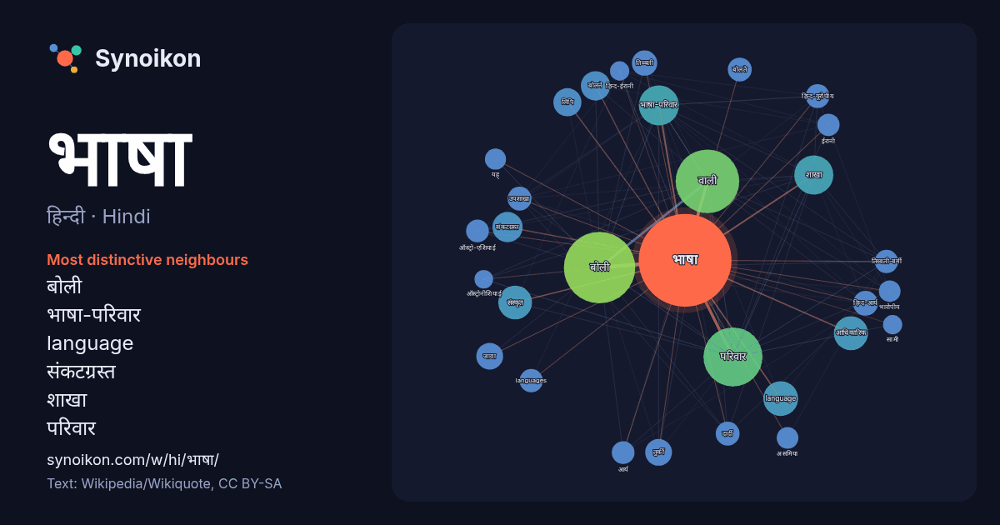

हिन्दी · Hindi · popular word
भाषा
“language” · The words found around it in 2151 instances from Hindi Wikipedia, Wikiquote.

Most distinctive neighbours
- बोली 93×
- भाषा-परिवार 58×
- language 45×
- संकटग्रस्त 35×
- शाखा 30×
- परिवार 29×
- बोलने 25×
- हिन्द-आर्य 25×
- जावा 25×
- हिन्द-यूरोपीय 23×
- दार्दी 23×
- उपशाखा 23×
- तिब्बती-बर्मी 22×
- languages 22×
- तिब्बती 22×
- आधिकारिक 21×
- ऑस्ट्रो-एशियाई 21×
- वाली 21×
- तुर्की 21×
- लिपि 20×
× = how many times more often than in general Hindi Wikipedia text.
Most frequent neighbours
- बोली 206
- वाली 164
- जाने 148
- परिवार 141
- भारत 130
- प्रमुख 92
- भाषा-परिवार 65
- शाखा 62
- language 49
- हिन्दी 49
- आधिकारिक 47
- विश्व 46
- संस्कृत 46
- लोगों 42
- लोग 41
- भारतीय 40
- लगभग 40
- प्राचीन 39
- समूह 39
- संकटग्रस्त 37
In context
- हैं।। भाषा को प्राचीन काल से ही परिभाषित करने की कोशिश की जाती रही है। इसकी कुछ मुख्य परिभाषाएँ निम्नलिखित हैं- (1) 'भाषा' शब्द संस्कृत के 'भाष्' … Wikipedia snippets · भाषा
- फ़्रांसीसी भाषा (français) एक रोमन भाषा है जो विश्वभर में लगभग ९ करोड़ लोगों द्वारा प्रथम भाषा के रूप में बोली जाती है। मूल रूप से इस भाषा को बोलने वाले Wikipedia snippets · फ़्रान्सीसी भाषा
- जाने वाली एक भाषा है। भारत की ३२५ मान्यता प्राप्त भाषाओं में से एक है और २६,६०,००० (१९९८) से अधिक लोगों द्वारा बोली जाती है।कुमाउँनी भाषा को सम्मान दिलाने Wikipedia snippets · कुमाऊँनी भाषा
- प्रदेश की आधिकारिक भाषा है। इसके साथ ही, यह श्रीलंका और सिंगापुर की भी आधिकारिक भाषा है। तमिल विश्व की सबसे प्राचीन जीवित भाषाओं में से एक है और इसका Wikipedia snippets · तमिल भाषा
- संविधान की ८वीं अनुसूची में सम्मिलित भाषाओं में से एक है। यह भाषा नेपाल के लगभग ४५% लोगों की मातृभाषा भी है। नेपाली भाषा नेपाल के अतिरिक्त भारत के सिक्किम Wikipedia snippets · नेपाली भाषा
- जानेवाली एक प्रमुख भाषा है। इसे 'बाङला', 'बाङ्गला' तथा 'बाङ्गाला' नाम से भी जाना जाता है। भाषाई परिवार की दृष्टि से यह हिन्द यूरोपीय भाषा परिवार का स … Wikipedia snippets · बंगाली भाषा
- हो रहा है। कन्नड अन्य द्रविड़ भाषाओं की तरह है और तेलुगु, तमिल और मलयालम इस भाषा से मिलली-जुलती हैं। कन्नड़ संस्कृत भाषा से बहुत प्रभावित है और संस्कृत Wikipedia snippets · कन्नड़ भाषा
- प्रान्त में बोली जाने वाली भाषा है। यह भाषा यहाँ के राज्य सरकार की राजभाषा भी है। भाषाई परिवार के तौर पर ओड़िआ एक आर्य भाषा है और नेपाली, बांग्ला, असमिया Wikipedia snippets · ओड़िया भाषा
More Hindi words
- इतिहास
- ईश्वर
- कार्य
- कुत्ता
- गर्मी
- गाना
- घंटी
- घड़ी
- घोड़ा
- चाय
- चित्रकला
- छाया
- जंगल
- जलवायु
- जीवन
- तूफ़ान
- दर्पण
- द्वीप
- नक्षत्र
- नमक
- परिवार
- पहाड़
- पानी
- पैसा
- प्रकृति
- बगीचा
- बिल्ली
- भोजन
- माता
- मानचित्र
- मृत्यु
- मौन
- रेगिस्तान
- रेलगाड़ी
- रोटी
- वर्षा
- विज्ञान
- शक्ति
- शरद
- शहद
- शहर
- सड़क
- सत्य
- समय
- सर्दी
- सेतु
- स्वर्ण
- स्वास्थ्य
- हृदय
Precomputed on 2026-10-09 with default settings (±5 words, medium corpus). The interactive map can refresh it with live data.